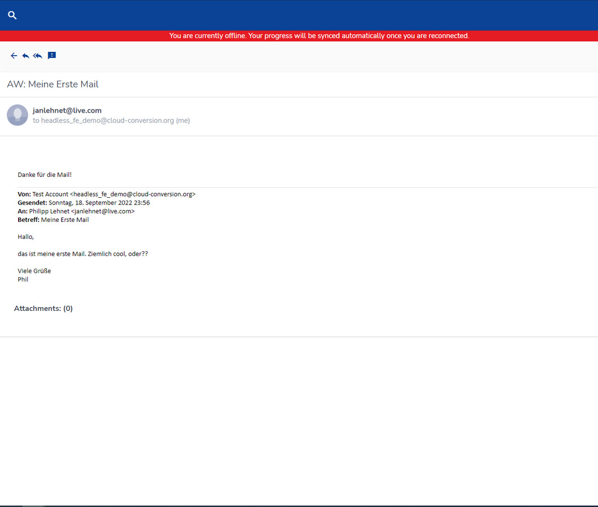
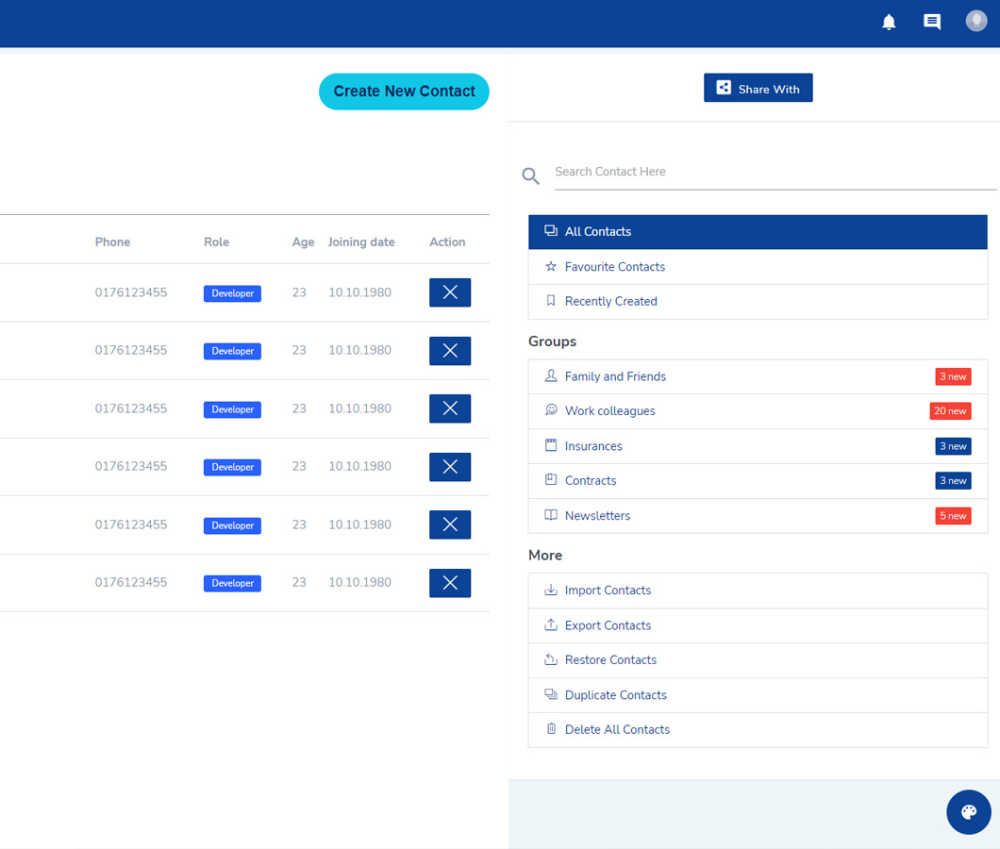

Introducing a recent project that I worked on for IONOS, where I developed a proof of concept web app framework that is fully offline capable. With the growing demand for web apps that work seamlessly both online and offline, IONOS needed a solution that would provide users with a reliable and responsive experience, regardless of their connectivity. The web app framework that I developed is compatible with all major browsers in recent versions, providing users with a powerful tool for building and deploying web apps that are both robust and efficient.

In developing this proof of concept web app framework, I focused on implementing key features that would enable users to have a reliable and responsive experience, regardless of their connectivity. One of the most important features that I implemented was full offline capabilities, which allows users to load the website without any internet connection whatsoever. This means that users can securely sign in and load cached data, even when they are not connected to the internet. Additionally, users can load any other web app from the same top-level domain without ever accessing it while being offline, ensuring a smooth and seamless experience.

Another key feature of this web app framework is that all changes made by the user are saved and will be synced whenever the client is back online. This means that users can make changes to the web app while offline, and those changes will be saved and synced automatically once they are connected to the internet again. This provides users with an experience that is close to a native app, using only the browser itself. To showcase the modular capabilities of the framework, I also implemented a web mailer and a contacts app, which demonstrate how the framework can be used to create powerful and responsive web apps. Overall, this proof of concept web app framework provides a powerful tool for building and deploying web apps that are both reliable and efficient, meeting the needs of IONOS and their users.